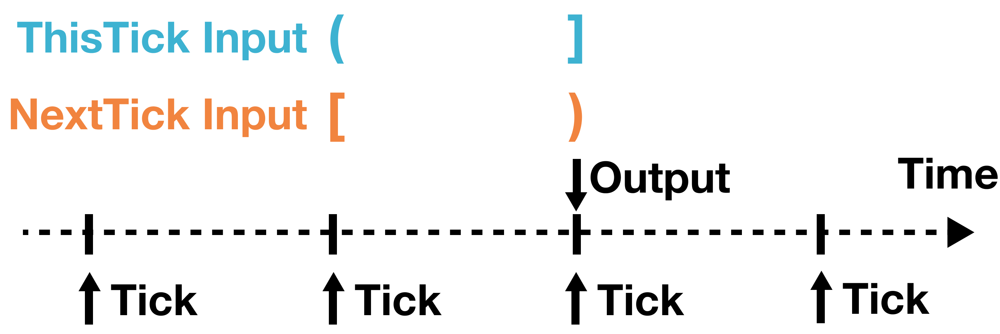

Akita--A Go-based Simulation Engine
Akita作为MGPU-SIM的基座，为研究Multi-GPU Arch提供了很好的模拟&评估平台，后续尝试基于此做一些GPU Arch Research。
Event-Driven Simulation
Time Record
In most simulators, time is typically recorded using u64 bit int.
However, in Akita, considering: 1. Dynamic Voltage and Frequency Scaling (DVFS) 2. multiple frequency domains 3. memory system & cores run at different frequencies
type VTimeInSec float64
V: Virtual Time, not real time. InSec: the time unit in Akita is consistently in seconds.
Frequency & clock cycles
Quote
Digital circuit update their states at clock cycle boundaries (ticks). These clock cycles usually maintain a steady frequency, which defines how soon digital circuit can update their status. This requires the simulator keep needing to calculate the time of the next cycle boundary. To address the need, Akita provides a frequency type.
Akita provides some relative functions including period, ThisTick and NextTick.
type Freq float64
func (f Freq) ThisTick(now VTimeInSec) VTimeInSec
func (f Freq) NextTick(now VTimeInSec) VTimeInSec

Events
In Akita, an event is an action without lasting time. So the action happens instantaneously.
A event has 2 mandatory properites: the time and handler, which are both immutable, once assigned and notupdated afterward.
type Event interface {
// Return the time that the event should happen
Time() VTimeInSec
// Returns the handler that should handle the event
Handler() Handler
// IsSecondary tells if the event is a secondary event. Secondary event are
// handled after all same-time primary events are handled.
IsSecondary() bool
}
where Handler is always developed and difined by simulator developers.
type Handler interface {
Handle(e Event) error
}
Event-Driven Simulation Engine
!!! quote Event-Driven -> Engine
Since we have defined event, a simulation can be considered as replaying a list of events in chronological order. Such a player is called an event-driven simulation engine, or engine for short. The engine maintains a queue of events and triggers events one by one.
2 functions in engine interfaces: Run and Schedule.
Run: Run triggers all the events (handled by handlers) until no event is left in the event queue.Schedule: registers an event to be triggered in the future.
2 implementations of engines: serial & parallel engines.
!!! quote Why not cycle drvien simulation?
First, cycle driven simulation is typically slower than event driven mainly because event-driven simulation can skip most **useless cycles**.
Second, cycle-based simulation has challenges handling systems with different frequency domains.
A simple Example
Suppose we have one small cell at the beginning. It will split at a random time between 1 - 2 second. After that, each cell will also wait for a random time between 1 - 2 seconds before the next split. We want to count the number of bacteria at the 10th second.
between 1 - 2 second, how to present the random latency? the event: the waiting reaches the 1 or 2 second the handler: cell split every cell has own time record and global record to know when to terminate (10 second)
Component
In system simulation, a large system typically is divided to several smaller related independent elements ,which are called component in Akita, such as computing cores, caches, and memory controllers.
A full simulation requires the interaction between components, which is solved by a message-passing system in Akita.
The transfer of messages relies on the ports and connections.
Definition
type Component interface {
Named
Handler
Hookable
PortOwner
NotifyRecv(now VTimeInSec, port Port)
NotifyPortFree(now VTimeInSec, port Port)
}
Named defines a simple Name() string method.
Rules:
1. Every component must have a name.
2. follows a hierarchy style: GPU[3].SA[5].L1VCche[0].
3. capitalized camel case (首字母大写，驼峰式)
4. square bracket indices, some rar cases have multi-dimensional indices.
Actually, a component is a handler that can handle events. Components typically schedule future events to be handled on their own.
Example: Memory Controller schedule a R/W Request, then handle it in the future.
### Message
Quote
Messages are the element that carries the information across components.
// A Msg is a piece of information transferred between components.
type Msg interface {
Meta() *MsgMeta
}
// MsgMeta contains the metadata that is attached to every message.
type MsgMeta struct {
ID string
Src, Dst Port
SendTime, RecvTime VTimeInSec
TrafficClass int
TrafficBytes int
}
Concrete message types can be self-definition like:
type ReadReq struct {
sim.MsgMeta
Address uint64
AccessByteSize uint64
PID vm.PID
CanWaitForCoalesce bool
Info interface{}
}
// Meta returns the message's metadata.
func (r *ReadReq) Meta() *sim.MsgMeta {
return &r.MsgMeta
}
As developers defining new messages, they are actually also defining a protocol between the components.
Quote
We define the memory read protocol as a two step series: 1. the requester send the read request, and 2. the memory data provider response with a DataReadyResponse. The protocol also defines (documentation only) that no negative acknowledgement (NAK) or retry is allowed. The data provider should always respond with the data, regardless the latency.
Considering responses as a special type. A general response is like:
type GeneralRsp struct {
MsgMeta
OriginalReq Msg //within a original Request msg
}
Advantages: 1. simpified development 2. improve the visualization: easy to see where the origin is from.
Ports
type Port interface {
... // Other methods
// To send a message through the port.
CanSend() bool
Send(msg Msg) *SendError
// To receive a message from the port.
Retrieve(now VTimeInSec) Msg //receive and remove message here
Peek() Msg // receive but keep message here
}
Ports can use NotifyRecv(now VTimeInSec, port Port) and NotifyPortFree(now VTimeInSec, port Port) to notice their components.
Components always have multiple ports for various destinations. However, ports have only 1 component.
Connections
Connections deliver messages from the source port to the destination port.
A connection can connect multiple ports, but a port can only link with one connection.
A connection can be considered a network (off-chip/on-chip) network that routes data across components.
The connections will call the SetConnection method of the port to notify the port about the connection.